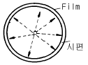

방사선비파괴검사산업기사(구) (2003-08-31 기출문제)
1과목: 방사선투과검사 시험
1. 방사선투과시험시 기하학적 조건에 의해 선명도를 향상시키기 위한 방법이 아닌 것은?
- 필름을 시편에 밀착시킨다.
- 초점이 큰 X선 장치를 사용한다.
- 선원과 시편과의 거리를 크게 한다.
- 초점을 시편의 수직 중심선상에 둔다.
(정답률: 알수없음)

2. 현상처리 과정에서 수세의 목적은 잔류 정착액을 씻어내기 위한 것이다. 흐르는 물을 이용하는 경우 보통 흐르는 물의 양은 얼마정도가 적당한가?
- 1ℓ/분
- 10ℓ/분
- 20ℓ/분
- 40ℓ/분
(정답률: 알수없음)
3. 후방산란각이 135° 인 경우 후방산란 선량율이 가장 적은 재질은 ?(단, 같은 두께일 때)
- 동판
- 납판
- 강판
- 알루미늄판
(정답률: 알수없음)
4. 압력용기나 시스템의 가동중에 발생하는 균열의 생성과 성장을 검출하기 가장 좋은 비파괴검사법은?
- 음향 충격법
- 음향 방출법
- 초음파 펄스 반사법
- 초음파 공진법
(정답률: 알수없음)
5. 방사선투과시험에서 일반적으로 최하위의 등급으로 분류되는 결함은?
- 기공
- 터짐
- 용입부족
- 슬래그개입
(정답률: 알수없음)
6. 시험 재료의 두께차나 또는 주변 재질에 대한 밀도 차이로 재료의 내부 상태를 알아보는 비파괴검사법은?
- 침투탐상검사
- 방사선투과검사
- 와전류탐상검사
- 자분탐상검사
(정답률: 알수없음)
7. 방사선투과검사를 수행할 때 만족할만한 투과사진을 얻기 위한 설명중 틀린 것은?
- 선원의 유효크기는 가능한한 작아야 한다.
- 가능한한 방사선의 중심선이 필름에 수직토록 한다.
- 선원과 시험체사이의 거리는 가능한한 먼 것이 좋다.
- 시험체의 관심대상이 되는 면이 필름에 수직하도록 한다.
(정답률: 알수없음)
8. TIG로 용접한 강용접부를 촬영한 결과 필름 용접선상에 날카로운 흰 반점이 생겼다면 어떤 결함으로 간주하는가?
- 기공
- 반점으로 현상처리 과정에서 생긴 인공결함
- 텅스텐 혼입
- 과다 용입
(정답률: 알수없음)
9. ASTM 유공(hole)형 투과도계 20번을 사용하여 25㎜ 두께의 시험체를 촬영했을 때 1T 구멍이 식별 되었다면 이 때의 등가투과도계감도(EPS : equivalent penetrameter sen-sitivity)는 몇 %가 되겠는가?
- 1.0%
- 1.4%
- 2.0%
- 4.0%
(정답률: 알수없음)
10. 필름을 카셋트에 장전시 연박 스크린에 긁힘자국이 생겼다면 투과사진에는 어떻게 나타나겠는가?
- 긁힘에 따라 흐리고 흰선으로
- 투과사진상에는 나타나지 않는다.
- 긁힘의 산란 때문에 나타난 임의의 필름지시
- 긁힘의 깊이에 따라서 선명한 검은 선으로
(정답률: 알수없음)
11. 시험체에 외력을 주어 표면에 나타나는 변화를 관찰하므로써 시험체 내부의 응력 등을 검사하는 검사법은?
- 중성자선 투과검사법
- 광탄성 피막검사법
- 전자기장 검사법
- 열전탐촉자 검사법
(정답률: 알수없음)
12. 다음 중에서 하전입자 방사선이 아닌 것은?
- β선
- α선
- 중성자선
- 중양자선
(정답률: 알수없음)
13. 방사선투과시험시 명료도(definition)에 영향을 미치는 사항을 열거한 것중 관계가 먼 것은?
- 필름의 입상성
- 형광 증감지의 입상성
- 시험체의 두께차
- 필름과 증감지의 밀착
(정답률: 알수없음)
14. 피사체 콘트라스트에 대한 다음 설명중 맞는 것은?
- X선 관전압을 증가시키면 피사체 콘트라스트는 감소한다.
- 필름 콘트라스트가 높아지면 피사체 콘트라스트도 높아 진다.
- X선 투과비가 감소한다는 것은 피사체 콘트라스트가 높아짐을 말한다.
- 같은 X선 관전압에서 얇은 금속이 두꺼운 금속보다 피사체 콘트라스트가 낮다.
(정답률: 알수없음)
15. 방사성 핵종에 있어서 동중핵끼리 짝지어진 것은?
- 157N, 158O
- 23592U, 23892U
- 147N, 158O
- 6027Co, 60m27Co
(정답률: 알수없음)
16. 어떤 방사성 동위원소의 붕괴 상수가 6.93x10-3/일이다. 이 동위원소의 반감기는?
- 10일
- 50일
- 75일
- 100일
(정답률: 알수없음)
17. X선관과 시험체 사이에 설치한 필터는 언더컷(undercut)을 일으키는 산란 방사선을 줄인다. 그 과정은?
- 일차 빔의 짧은 파장의 성분을 흡수하므로써
- 일차 빔의 긴 파장의 성분을 흡수하므로써
- 후방산란 방사선을 흡수하므로써
- 빔의 강도를 줄임으로써
(정답률: 알수없음)
18. 투과사진의 농도 D1의 부분에 농도 D2의 결함상이 존재하는 경우에 투과사진 상에서 결함의 존재를 인지할 수 있느냐 하는 것은 결함에 의한 농도차 ΔD = D2 - D1과 결함의 존재를 인지할 수 있는 최소의 농도차 즉 식별한계 콘트라스트 ΔDmin 와의 관계이다. 다음 중 결함이 식별되지 않는 것은?
- ｜ΔD｜ ＞ ｜ΔDmin｜
- ｜ΔD｜ = ｜ΔDmin｜
- ｜ΔD｜ ＜ ｜ΔDmin｜
- ｜ΔD｜÷｜ΔDmin｜ = 1
(정답률: 알수없음)
19. 다음 중 동위원소(Isotope)에 대한 설명으로 틀린 것은?
- 원자번호가 같고 질량수가 다른 것
- 양성자수가 같고 중성자수가 다른 것
- 양성자수가 같고 질량수가 다른 것
- 핵의 전하수가 같고 궤도전자수가 다른 것
(정답률: 알수없음)
20. 다음 중 철판내에서 자주 발견할 수 있는 결함은?
- 파열(burst)
- 스트링거(stringer)
- 심(seam)
- 라미네이션(lamination)
(정답률: 알수없음)
2과목: 방사선투과검사 시험
21. 강판의 맞대기 용접부를 KS B 0845에 따라 방사선투과시험할 때 계조계의 사용에 대한 설명이다. 올바른 것은?
- 모재두께 25mm 이하의 용접이음에 대해 적용한다.
- 용접부의 양끝에 가능한한 멀리 떨어지게 놓는다.
- 계조계는 10형, 15형, 20형, 25형으로 나뉜다.
- 계조계 값에 따라 계조계를 선원쪽에 놓을 수 있다.
(정답률: 알수없음)
22. 방사선투과시험시 노출도표를 작성할 때 고정시켜야 할인자가 아닌 것은?
- 사용한 필름
- 필름의 농도
- 현상조건
- 노출시간
(정답률: 알수없음)
23. 다음 중 반감기가 가장 짧은 방사성 동위원소는?
- Cs-137
- Ir-192
- Co-60
- Tm-170
(정답률: 알수없음)
24. 철강 용접부를 Ir-192 선원으로 방사선투과시험시 그 모재두께가 40㎜일 때 일반적으로 사용되는 증감지는?
- 형광 증감지는 모두 사용 가능
- 전면이 0.03㎜, 후면이 0.⑤㎜인 형광 증감지
- 전면이 0.127㎜, 후면이 0.25㎜인 연(납)박 증감지
- 전면이 0.5㎜, 후면이 0.6㎜인 연(납)박 증감지
(정답률: 알수없음)
25. 방사선투과검사시 촬영의 기본원칙이 아닌 것은?
- 시험체면과 필름면은 평행
- 필름면의 중심에서 선원의 위치는 수직
- 시험체면과 필름면은 밀착
- 선원크기는 가능한 클 것
(정답률: 알수없음)
26. 일반적으로 방사선 투과사진에서 결함부위는 주위보다 높은 농도를 나타낸다. 다음 중 주위보다 농도가 낮게 나타나는 결함은?
- 균열
- 콜드셧
- 텅스텐개재물
- 미스런
(정답률: 알수없음)
27. 인체 방사선 피폭량을 관리하기 위해 사용되는 선량당량의 SI 단위는?
- rad
- Bq
- mR
- Sv
(정답률: 알수없음)
28. 주물 생산 과정에서 탕구, 압탕, 주탕속도 및 냉금 등이 부적당한 경우 응고시 금속의 수축량을 주위의 용탕에 의해 보급할 수 없는 경우에 발생하는 결함은?
- 수축관
- 균열
- 미스런
- 콜드셧
(정답률: 알수없음)
29. 평판 용접부의 방사선투과사진 농도 측정에 대한 설명 중 올바른 것은?
- 최저농도는 필름 중앙부분인 경우가 많다.
- 최고농도는 필름 중앙부분인 경우가 많다.
- 사진농도는 관찰기 밝기에 따라 변하지 않는다.
- 농도계 영점은 한장의 필름상에서는 변하지 않는다.
(정답률: 알수없음)
30. 다음 판형투과도계에서 감도기준 수치가 낮은 것부터의 상질수준(quality level)으로 올바른 것은?
- 1-2T, 2-2T. 4-2T
- 2-4T, 1-1T, 2-2T
- 4-2T, 2-1T, 1-1T
- 2-2T, 1-2T, 2-4T
(정답률: 알수없음)
31. 방사선투과시험시 사용중인 현상액에 보충액을 어느 정도까지 보충시킬 수 있는가?
- 1배
- 2배
- 5배
- 10배
(정답률: 알수없음)
32. 방사선 발생장치의 노출도표에 명시되어야 할 사항이 아닌 것은?
- 필름의 종류
- 현상작업의 조건
- 필름의 농도
- 시편과 필름간의 거리
(정답률: 알수없음)
33. 방사선투과시험용 구리 스크린이 납 스크린과 다른 점에 대한 설명으로 틀린 것은?
- 증감효과가 적다.
- 높은 에너지에서 감도가 좋다.
- 방사선 흡수가 적다.
- 산화납 스크린과 비슷하다.
(정답률: 알수없음)
34. 방사선투과시험에서 수동 현상시 적당한 온도와 현상시간은?
- 15℃∼20℃에서 8분∼15분
- 18℃∼22℃에서 5분∼8분
- 22℃∼25℃에서 8분∼15분
- 25℃∼28℃에서 5분∼8분
(정답률: 알수없음)
35. 표적이 텅스텐으로 된 X-선 발생장치로 관전압 280KVp로 작동시켰을 때 X선의 전환율은? (단, 텅스텐의 원자번호는 74)
- 0.9%
- 1.4%
- 2.9%
- 3.8%
(정답률: 알수없음)
36. 감광유제가 X선, γ선, 빛 또는 전자에 충돌되었을 때 할로겐화 입자에서 변화가 나타나는데 이를 무엇이라 하는 가?
- 사진 흑화도
- 사진감도
- 잠상
- 특성곡선
(정답률: 알수없음)
37. 공업용 X선 발생장치의 관전압이 250kV, 관전류가 5mA이고, 강판의 두께가 20mm일 때 전방산란 선량율이 가장 적은 산란 방향은?
- 15°
- 45°
- 60°
- 120°
(정답률: 알수없음)
38. X선 필름의 현상에 대한 설명으로 틀린 것은?
- 15℃이하에서는 현상작용이 현저하게 불활성이 된다.
- 25℃이상에서는 현상작용이 너무 급속히 진척되어 필름이 감광현상을 증가시킨다.
- 현상시간이 길면 포화상태이전까지 감도는 좋아진다.
- 25℃이상에서는 은입자가 부드러워진다.
(정답률: 알수없음)
39. γ선을 이용하여 방사선투과검사를 할 경우 필름에 작용하는 산란선 억제방법이 아닌 것은?
- 콜리메타(Collimtor) 사용
- 연박증감지(Lead screen) 사용
- 카세트(Cassette) 후면에 차폐체 배치
- 노출시간 증가
(정답률: 알수없음)
40. 금속제품의 용접부에 판독되는 결함들이 내부결함과 외부 결함으로 분류될 때 내부결함에 속하지 않는 것은?
- 기공(Porosity)
- 융합부족(Lack of fusion)
- 과잉용입(Excessive penetration)
- 텅스텐 혼입(Tungsten inclusion)
(정답률: 알수없음)
3과목: 방사선안전관리, 관련규격 및 컴퓨터활용
41. KS B 0845에 따른 계조계의 각각 두께부분을 올바르게 나타낸 것은?(단, 계조계는 15, 20, 25형이며, 단위는 ㎜)
- 1.0, 2.0, 4.0
- 2.0, 3.0, 4.0
- 3.0, 4.0, 5.0
- 4.0, 5.0, 6.0
(정답률: 알수없음)
42. Co-60의 1피트 거리에서의 시간당 선량율은 1큐리당 14.5R/h/ft 이다. 이 때 Co-60선원으로부터 3m 떨어진 곳에서의 선량율의 크기는 얼마가 되는가? (단, Co-60 선원의 큐리수는 4큐리이다)
- 59.87mR/h
- 119.74mR/h
- 239.48mR/h
- 598.7mR/h
(정답률: 알수없음)
43. 긴급 작업에 종사하는 자의 유효선량은?
- 1Sv
- 0.5Sv
- 15Sv
- 20Sv
(정답률: 알수없음)
44. 파일에 대한 위치 정보가 기록되어 있는 영역은?
- 데이터 영역
- 디렉토리 영역
- 부트 섹터
- FAT
(정답률: 알수없음)
45. KS B 0845에 따라 맞대기 용접부의 촬영배치시 투과도계는 어떻게 배열하는가?
- 시험부의 선원쪽 용접부 면상에
- 시험부의 선원쪽 모재 면상에
- 시험부의 선원 반대쪽 용접부 면상에
- 시험부의 선원 반대쪽 모재 면상에
(정답률: 알수없음)
46. 컴퓨터의 기능을 이동할 수 있는 환경에서 수행할 수 있는 컴퓨팅을 무엇이라 하는가?
- Intelligent computing
- Neural computing
- Mobile Computing
- Desktop computing
(정답률: 알수없음)
47. ASME 투과도계중 그 두께가 0.008인치이고 2T 구멍이 0.02인치 인 투과도계는?
- 8
- 16
- 37
- 50
(정답률: 알수없음)
48. 다음 선원중 감마선의 선량율이 가장 큰 것은?
- Co-60, 10큐리
- Ir-192, 15큐리
- Cs-137, 10큐리
- Tm-170, 15큐리
(정답률: 알수없음)
49. ASME Sec.Ⅴ에 따라 방사선투과사진 관찰시 두께가 0.02 인치인 투과도계의 2T hole(구멍)이 보였다면 2-2T 품질 수준을 만족하는 검사체의 최소 두께는?
- 1인치
- 2인치
- 0.5인치
- 4인치
(정답률: 알수없음)
50. KS B 0845에 의거 강판의 모재 두께가 25㎜ 초과 100㎜ 이하인 투과사진에서 제1종 흠(결함) 점수를 구하기 위한 시험시야의 크기는?
- 10㎜x10㎜
- 10㎜x20㎜
- 20㎜x30㎜
- 10㎜x30㎜
(정답률: 알수없음)
51. KS D 0243에 의거 알루미늄 원주용접부를 방사선투과검사 할 때 내부선원 촬영법에 의하여 전둘레를 동시에 촬영한다면 최소한 몇 개의 투과도계를 부착시켜야 하는가?

- 2
- 3
- 4
- 5
(정답률: 알수없음)
52. 사용자가 인터넷을 이용하여 웹서버의 하이퍼 텍스트 문서를 볼 수 있도록 해주는 클라이언트 프로그램은?
- HWP
- Java
- Web Browser
(정답률: 알수없음)
53. X선, γ선에 대한 선질계수(Quality Factor, QF라 약칭) 값은?
- 8
- 10
- 2∼10
- 1
(정답률: 알수없음)
54. 삭제된 파일을 복구하는 방법이 아닌 것은?
- 폴더창의 [편집] 메뉴에서 [실행 취소]명령을 사용한다.
- 오른쪽 마우스 버튼을 누르고 단축메뉴의 [실행취소] 명령을 사용한다.
- ＜Ctrl+C＞ 키를 누른다.
- 도구 모음이 표시된 경우 [실행취소] 명령을 이용한다.
(정답률: 알수없음)
55. 방사선구역 수시출입자에 대한 수정체의 연간 등가선량한도는?
- 12mSv
- 15mSv
- 30mSv
- 50mSv
(정답률: 알수없음)
56. KS D 0242에 의한 알루미늄 용접부의 투과사진에서 4급으로 판정하여야 할 결함은?
- 용입부족
- 균열
- 텅스텐 권입
- 융합부족
(정답률: 알수없음)
57. 다음 중 원유 저장탱크를 검사할 때 주로 사용되는 규격은?
- ASME Sec.VⅢ
- ASME Sec.V, Art.6
- API 1104
- API 650
(정답률: 알수없음)
58. 다음 중 정보를 검색하는 엔진에 속하지 않는 것은?
- 라이코스
- 네이버
- 엠파스
- 모자이크
(정답률: 알수없음)
59. 일반인에 대한 년간 유효선량한도 규정 값은?
- 0.1mSv
- 0.5mSv
- 1mSv
- 10mSv
(정답률: 알수없음)
60. ASME Sec.Ⅷ에 따라 허용 덧붙임을 제외한 용접부의 두께가 30mm인 압력용기를 부분방사선투과사진(Spot Radiography)으로 촬영하였다. 다음 지시 중 합격인 것은?
- 길이가 15mm인 슬래그개재물
- 길이 9mm의 균열을 나타내는 지시
- 길이 12mm의 융합불량을 나타내는 지시
- 길이 10mm의 용입부족을 나타내는 지시
(정답률: 알수없음)
4과목: 금속재료 및 용접일반
61. 서브머지드 아크용접으로 편면 용접(one side welding)시 시작부의 균열 원인으로 다음 중 가장 적합한 것은?
- 와이어 중심잡기(centering)가 불량하다.
- 메탈 파우더의 산포량이 과대하다.
- 용접선과 용제 산포선의 위치가 일치한다.
- 시작부에 실링비드(sealing bead)가 없다.
(정답률: 알수없음)
62. 용접 작업성을 좋게 하는 요소가 아닌 것은?
- 아크의 안정 및 집중이 좋을 것.
- 아크가 조용히 발생 될 것.
- 슬래그의 응고 온도가 높을 것.
- 슬래그의 빠져 나감이 양호할 것.
(정답률: 알수없음)
63. 전기저항 용접에 해당되는 용접법은?
- 점 용접
- 금속 아크 용접
- 가스 용접
- 산소수소 용접
(정답률: 알수없음)
64. 40∼55% Co, 15∼33% Cr, 10∼20% W, 2∼5% C로 된 주조 경질 합금은?
- 고속도강
- 스텔라이트
- 합금공구강
- 다이스강
(정답률: 알수없음)
65. 일정한 온도에서 용액 중의 두 금속이 동시에 정출되는 철강의 상태도(용액E = 결정A + 결정B)는 어떤 반응인가?
- 공석
- 편정
- 공정
- 포정
(정답률: 알수없음)
66. 플래시 버트용접의 특징을 설명한 것으로 틀린 것은?
- 신뢰도가 높고 이음강도가 크다.
- 가열부의 열영향부가 좁으며, 용접시간이 짧다.
- 큰 물건의 용접이 가능하며 이종재료도 용접이 가능하다.
- 용접면에 산화물 개입이 많게 되므로 용접면을 깨끗하게 가공해야 한다.
(정답률: 알수없음)
67. 0.2%C강의 표준상태에서(공석점 직하)펄라이트의 양(%)은?(공석점 0.8% C, α 최대탄소 용해한도 0.025%C 일 때)
- 약 10
- 약 23
- 약 44
- 약 50
(정답률: 알수없음)
68. 아세틸렌가스에는 불순물이 포함되어 여러가지 악영향을 미치는데, 여러가지 악영향 중 용착금속을 약하게 하고 토치 통로를 막아 역류, 역화의 원인이 되는 불순물은?
- 인화수소
- 황화수소
- 질소
- 석회분말
(정답률: 알수없음)
69. 탄산가스 아크용접에서 발생하는 일산화탄소(CO)에 의하여 나타나는 주요 결함으로 가장 적합한 것은?
- 기공
- 융합 부족
- 균열
- 슬래그 혼입
(정답률: 알수없음)
70. 고속도 공구강(high speed tool steel)이 갖추어야 할 성질이 아닌 것은?
- 뜨임 저항성이 없어야 한다.
- 적열강도가 좋아야 한다.
- 내마모성이 우수하여야 한다.
- 높은 경도를 가져야 한다.
(정답률: 알수없음)
71. Ni-Cr계 합금이 아닌 것은?
- 하스텔로이
- 니크롬
- 알펙스
- 인코넬
(정답률: 알수없음)
72. 용접부에 발생하는 인장 및 압축 잔류응력이 용접구조물에 미치는 영향에 관한 설명 중 인장 잔류응력의 영향이 아닌 것은?
- 피로강도의 저하를 가져온다.
- 좌굴현상을 발생하게 한다.
- 파괴전파를 용이하게 한다.
- 응력부식 현상을 촉진한다.
(정답률: 알수없음)
73. 결정 중에 존재하는 점결함(point defect)이 아닌 것은?
- 원자공공(vacancy)
- 격자간 원자(interstitial atom)
- 전위(dislocation)
- 치환형 원자(substituional atom)
(정답률: 알수없음)
74. 용접부에 잔류응력이 있는 제품에 하중을 주고, 용접부에 약간의 소성변형을 일으킨 후에 하중을 제거하여서 용접부의 잔류응력을 제거하는 방법은?
- 피닝법
- 저온 응력 완화법
- 국부 풀림법
- 기계적 응력 완화법
(정답률: 알수없음)
75. 용접의 고속화와 자동화를 기하기 위한 용접법 중 입상의 용제를 사용하는 용접법은?
- 불활성가스 아크 용접
- 버트 용접
- 서브머지드 아크 용접
- 시임 용접
(정답률: 알수없음)
76. 섬유강화 금속의 특징이 틀린 것은?
- 섬유축 방향의 강도가 크다.
- 전자기적 특성이 우수하다.
- 2 차성형성, 접합성이 있다.
- 비강도, 비강성이 낮다.
(정답률: 알수없음)
77. 수동피복 아크용접기의 정격사용률이 40%인 용접기에서 실제의 사용전류는 120A이며 정격2차전류가 180A일 경우 이 용접기의 허용사용률은 약 몇 % 인가?
- 18
- 60
- 90
- 120
(정답률: 알수없음)
78. 강자성체의 금속이 아닌 것은?
- Fe
- Co
- Ni
- Aℓ
(정답률: 알수없음)
79. 변태점 측정법이 아닌 것은?
- 열분석법(thermal analysis)
- 비열법(specific heat analysis)
- 에릭센시험법(erichsen test)
- 전기저항법(electric resistance analysis)
(정답률: 알수없음)
80. 고온 측정용의 열전쌍으로 사용되는 합금은?
- 황동-청동
- 알루멜-크로멜
- 모넬메탈
- 인바
(정답률: 알수없음)